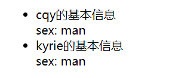
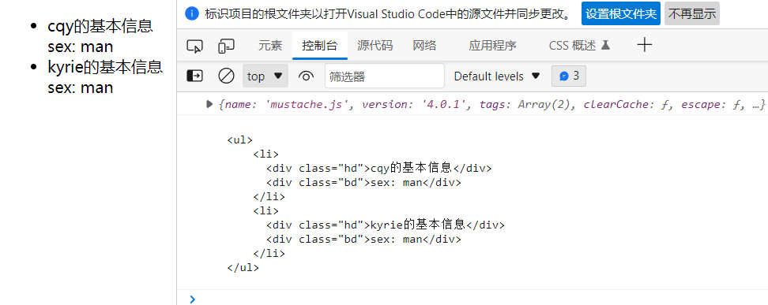
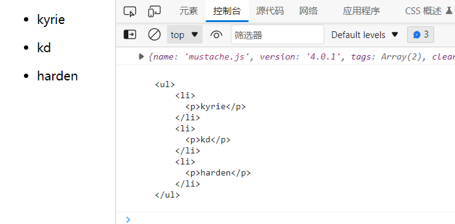
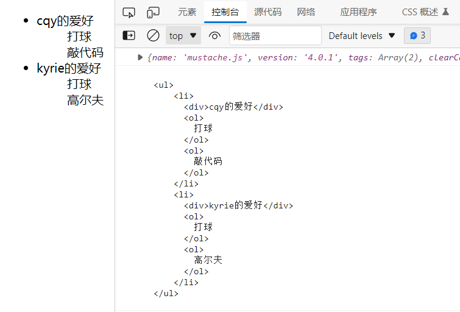
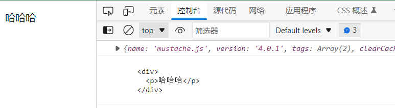
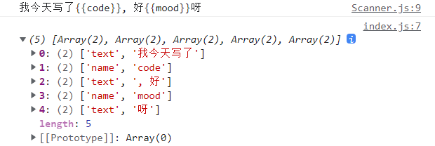
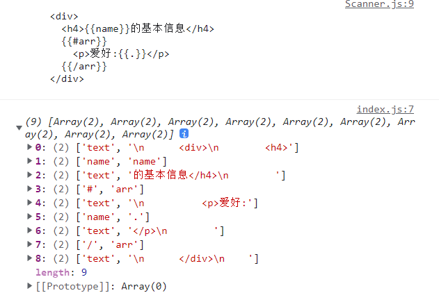
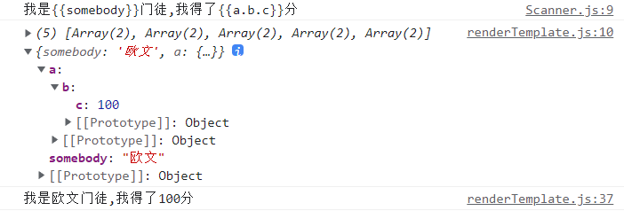
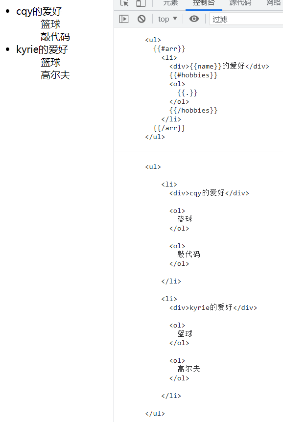

mustache模板引擎 什么是模板引擎 先上结论：模板引擎是将数据变为视图的最优雅的方案
1 2 3 4 5 6 7 8 9 10 11 12 13 14 15 16 17 [ {name : 'cqy' , sex : 'man' }, {name : 'kyrie' , sex : 'man' }, ] <ul> <li > <div class ="hd" > cqy的基本信息</div > <div class ="bd" > sex: man</div > </li > <li > <div class ="hd" > kyrie的基本信息</div > <div class ="bd" > sex: man</div > </li > </ul>
在历史上曾经出现的将数据变成视图的方法有:
纯DOM法
数组join()法
ES6反引号法
模板引擎
纯DOM法 用纯DOM法来创建视图非常笨拙，毫无实战价值
1 2 3 4 5 6 7 8 9 10 11 12 13 14 15 16 17 18 19 20 21 22 23 24 25 26 27 <body> <ul id ="list" > </ul > <script > var arr = [ {name : 'cqy' , sex : 'man' }, {name : 'kyrie' , sex : 'man' }, ]; let ul = document .getElementById ('list' ) for (let i=0 ;i<arr.length ;i++) { let oli = document .createElement ('li' ) let hdDiv = document .createElement ('div' ) hdDiv.className = 'hd' hdDiv.innerText = arr[i].name + '的基本信息' let bdDiv = document .createElement ('div' ) bdDiv.className = 'hd' bdDiv.innerText = 'sex: ' + arr[i].sex oli.appendChild (hdDiv) oli.appendChild (bdDiv) ul.appendChild (oli) } </script > </body >
数组join()法 数组join()法的本质是使用了字符串，以字符串的视角将html字符串添加到body中
1 2 3 4 5 let str = ' adsfd saf '
这个时候数组的join()方法就发挥了作用，join()可以将数组的内容拼接在一起
1 2 3 4 5 let str = [ 'a' , 'b' , 'c' ].join ('' )
可能现在还看不出有什么特别之处，当我们将内容替换成html语句时，就可以显示出html语句的层次关系，比单纯的字符串写在一行要清晰
1 2 3 4 5 6 let str = [ '<li>' , ' <div class="hd"></div>' , ' <div class="bd"></div>' , '</li>' ].join ('' )
这个时候你可能还是不知道这有什么用，这时就要用到 innerHTML() 方法
1 2 3 4 5 6 7 8 9 10 11 12 13 14 15 16 17 18 19 20 21 <body> <ul id ="list" > </ul > <script > var arr = [ {name : 'cqy' , sex : 'man' }, {name : 'kyrie' , sex : 'man' }, ]; let ul = document .getElementById ('list' ) for (let i=0 ;i<arr.length ;i++) { ul.innerHTML += [ '<li>' , ' <div class="hd">' + arr[i].name + '的基本信息' + '</div>' , ' <div class="bd">' + 'sex: ' + arr[i].sex + '</div>' , '</li>' ].join ('' ) } </script > </body >

ES6反引号法 es6中的反引号支持换行，并且可以用${}语法糖直接插入数据，本质上和数组join()法一样，只是更加优雅
1 2 3 4 5 6 7 8 9 10 11 12 13 14 15 16 17 18 19 20 <body > <ul id ="list" > </ul > <script > var arr = [ {name : 'cqy' , sex : 'man' }, {name : 'kyrie' , sex : 'man' }, ]; let ul = document .getElementById ('list' ) for (let i=0 ;i<arr.length ;i++) { ul.innerHTML += ` <li> <div class="hd">${arr[i].name} 的基本信息</div> <div class="bd">sex: ${arr[i].sex} </div> </li> ` } </script > </body >
Mustache的基本使用 为了学习mustache我们需要引入它，可以使用npm的方法在node环境下使用，也可以通过cdn的方法引入在浏览器使用
在mustache引入之后，就会有一个Mustache对象{{}}表示，注意 {{}}中不支持写表达式的，因为mustache是逻辑很弱的模板引擎
循环对象数组
1 2 3 4 5 6 7 8 9 {{#data}} {{/data}} {{name}} Mustache .render (templateStr, data)
例子：
1 2 3 4 5 6 7 8 9 10 11 12 13 14 15 16 17 18 19 20 21 22 23 <script > console.log(Mustache); let data = { arr: [ {name: 'cqy', sex: 'man'}, {name: 'kyrie', sex: 'man'}, ] } let templateStr = ` <ul > {{#arr }} <li > <div class ="hd" > {{name }} 的基本信息</div > <div class ="bd" > sex: {{sex }} </div > </li > {{/arr }} </ul > ` let domStr = Mustache.render(templateStr, data) console.log(domStr); let container = document.getElementById('container') container.innerHTML = domStr </script >

不进行循环，直接写入数据 {{}}
1 2 3 4 5 6 7 8 9 10 11 <script> let data = { name : 'cqy' , age : '20' } let templateStr = `my name is {{name}}, age is {{age}}` let domStr = Mustache .render (templateStr, data) let container = document .getElementById ('container' ) container.innerHTML = domStr </script>
循环简单数组 {{.}}
1 2 3 4 5 6 7 8 9 10 11 12 13 14 15 16 17 18 19 20 21 22 23 <script> console .log (Mustache ); let data = { arr : ['kyrie' , 'kd' ,'harden' ] } let templateStr = ` <ul> {{#arr}} <li> <p>{{.}}</p> </li> {{/arr}} </ul> ` let domStr = Mustache .render (templateStr, data) console .log (domStr); let container = document .getElementById ('container' ) container.innerHTML = domStr </script>

循环嵌套数组
1 2 3 4 5 6 {{#data1}} {{#data2}} {{/data2}} {{/data1}}
例子:
1 2 3 4 5 6 7 8 9 10 11 12 13 14 15 16 17 18 19 20 21 22 23 24 25 26 27 28 <script> console .log (Mustache ); let data = { arr : [ {name : 'cqy' , sex : 'man' , hobbies : ['打球' ,'敲代码' ]}, {name : 'kyrie' , sex : 'man' , hobbies : ['打球' ,'高尔夫' ]}, ] } let templateStr = ` <ul> {{#arr}} <li> <div>{{name}}的爱好</div> //嵌套数字 {{#hobbies}} <ol> {{.}} </ol> {{/hobbies}} </li> {{/arr}} </ul> ` let domStr = Mustache .render (templateStr, data) console .log (domStr); let container = document .getElementById ('container' ) container.innerHTML = domStr </script>

布尔值 {{#m}} m为布尔值，m为真显示区块中的内容，为假则不显示
1 2 3 4 5 6 7 8 9 10 11 12 13 14 15 16 17 18 <script> console .log (Mustache ); let data = { show : false } let templateStr = ` <div> <p>哈哈哈</p> {{#show}} <div>我没有被展示</div> {{/show}} </div> ` let domStr = Mustache .render (templateStr, data) console .log (domStr); let container = document .getElementById ('container' ) container.innerHTML = domStr </script>

模拟简单的数据替换 使用字符串的replace来替换捕获到的数据
完整的匹配项
捕获组的内容
匹配项的索引
整个字符串的内容1 2 3 4 5 6 7 8 9 10 11 12 13 14 15 16 17 18 19 <script> let data = { name : 'cqy' , age : 20 } let templateStr = "<h2>My name is {{name}}, Age is {{age}}</h2>" function myRender (templateStr,data ) { return templateStr.replace (/\{\{(\w+)\}\}/g , function (findStr, $1 ) { console .log ($1 ); return data[$1 ]; }) } let res = myRender (templateStr, data) console .log (res); </script>
但当情况复杂时，正则表达式的思路肯定是不可以得
Mustache的底层核心机理
tokens是一个JS嵌套数组，说白了，就是模板字符串的JS表示 tokens是抽象语法树和虚拟节点的开山鼻祖
简单数据下的tokens <h1>my hobby is {{hobby}}, age is {{age}}</h1>
tokens：
1 2 3 4 5 6 7 8 9 [ ['text' , '<h1>my name is ' ], ['name' , 'hobby' ], ['text' , ', age is ' ], ['name' , 'age' ], ['text' , '</h1>' ] ]
当模板字符串有循环的存在时，它将被编写成嵌套更深的tokens
1 2 3 4 5 6 7 <ul> {{#arr}} <li> {{.}} </li> {{/arr}} </ul>
tokens:
1 2 3 4 5 6 7 8 9 10 11 12 [ ['text' , '<ul>' ], ['#' , 'arr' , [ ['text' , '<li>' ], ['name' , '.' ], ['text' , '</li>' ], ]], ['text' , '</ul>' ] ]
由此可见，mustache的底层重点要做两件事
将模板字符串翻译为tokens形式
将tokens结合数据，解析为dom字符串
手写实现Mustache 手写Scanner类 要实现模板字符串转化成tokens，首先得可以实现有一个东西扫描整个模板字符串来找到双大括号的位置，从而将双大括号外面和双大括号里面的东西抽离出来，Scanner类就是来实现这个功能
例如：模板字符串 'my name is {{myName}}, age is {{age}}'要转化为tokens{时，返回在这之前扫描到的字符串，然后跳过{{`，接着扫描直到遇到指定内容`}`时，返回在这之前扫描到的字符串，然后跳过`}}，重复以上步骤直到模板字符串末尾
定义Scanner类
1 2 3 4 5 6 7 8 9 10 11 12 13 14 15 16 17 18 19 20 21 22 23 24 25 26 27 28 29 30 31 32 33 34 35 36 37 38 39 40 41 42 43 44 45 46 47 48 49 50 51 52 53 54 export default class Scanner { constructor (templateStr ) { this .templateStr = templateStr this .pos = 0 this .tail = templateStr } scan (tag ) { if (this .tail .indexOf (tag) == 0 ) { this .pos += tag.length this .tail = this .templateStr .substring (this .pos ) } } scanUntil (stopTag ) { const pos_start = this .pos while (this .tail .indexOf (stopTag) != 0 && !this .eos ()) { this .pos ++ this .tail = this .templateStr .substring (this .pos ) } return this .templateStr .substring (pos_start, this .pos ) } eos ( return this .pos >= this .templateStr .length } }
使用Scanner类
1 2 3 4 5 6 7 <body > <script > let templateStr = '我今天写了 {{code }} , 好 {{mood }} 呀' let data = {} TemplateEngine.render(templateStr, data) </script > </body >
1 2 3 4 5 6 7 8 9 10 11 12 13 14 15 16 17 18 import Scanner from './Scanner' window .TemplateEngine = { render (templateStr,data ) { var scanner = new Scanner (templateStr) while (scanner.pos != templateStr.length ) { var words = scanner.scanUntil ('{{' ) scanner.scan ('{{' ) words = scanner.scanUntil ('}}' ) scanner.scan ('}}' ) } } }
得到的结果：
手写将模板字符串变成tokens 简单的一维数组tokens
当我们的模板字符串没有嵌套多层时，可以很容易转化成一维数组的tokens
1 2 3 4 5 6 7 8 <body > <script src ="/xuni/bundle.js" > </script > <script > let templateStr = '我今天写了 {{code }} , 好 {{mood }} 呀' let data = {} TemplateEngine.render(templateStr, data) </script > </body >
1 2 3 4 5 6 7 8 9 import parseTemplateToTokens from './parseTemplateToTokens' window .TemplateEngine = { render (templateStr,data ) { var tokens = parseTemplateToTokens (templateStr) console .log (tokens); } }
1 2 3 4 5 6 7 8 9 10 11 12 13 14 15 16 17 18 19 20 21 22 23 24 25 26 27 28 29 30 31 32 33 34 35 36 import Scanner from './Scanner' export default function parseTemplateToTokens (templateStr ) { var tokens = [] var scanner = new Scanner (templateStr) var words = '' while (!scanner.eos ()) { words = scanner.scanUntil ('{{' ) if (words != '' ) { tokens.push (['text' , words]) } scanner.scan ('{{' ) words = scanner.scanUntil ('}}' ) if (words != '' ) { tokens.push (['name' , words]) } scanner.scan ('}}' ) } return tokens }

更进一步的tokens
当我们遇到模板字符串的嵌套时，先初步将{{#...}} {{/...}}分离出来
1 2 3 4 5 6 7 8 9 10 11 12 13 14 15 16 words = scanner.scanUntil ('}}' ) if (words != '' ) { if (words[0 ] == '#' ) { tokens.push (['#' , words.substring (1 )]) } else if (words[0 ] == '/' ) { tokens.push (['/' , words.substring (1 )]) } else { tokens.push (['name' , words]) } } scanner.scan ('}}' )

将tokens嵌套起来
我们要将tokens嵌套起来，如下图的形式
在实现嵌套tokens时我们要用到栈
1 2 3 4 5 6 7 8 9 import Scanner from './Scanner' export default function parseTemplateToTokens (templateStr ) { return nestTokens (tokens) }
以下代码是根据我自己的思路来实现嵌套tokens
1 2 3 4 5 6 7 8 9 10 11 12 13 14 15 16 17 18 19 20 21 22 23 24 25 26 27 28 29 30 31 32 33 34 35 36 37 38 39 40 41 42 43 44 45 46 47 export default function nestTokens (tokens ) { var nestedTokens = [] var sections = [] for (let i=0 ; i < tokens.length ; i++) { let token = tokens[i] switch (token[0 ]) { case '#' : token[2 ] = [] sections.push (token) break ; case '/' : let section = sections.pop () if (sections.length == 0 ) { nestedTokens.push (section) } else { sections[sections.length - 1 ][2 ].push (section) } break ; default : if (sections.length == 0 ) { nestedTokens.push (token) } else { sections[sections.length - 1 ][2 ].push (token) } } } return nestedTokens }
控制台打印的结果：
源码中很巧妙的使用了一个收集器，很大程度上简化了代码，并且逻辑更清晰
1 2 3 4 5 6 7 8 9 10 11 12 13 14 15 16 17 18 19 20 21 22 23 24 25 26 27 28 29 30 31 32 33 34 35 36 37 38 39 40 41 42 43 44 export default function nestTokens (tokens ) { var nestedTokens = [] var sections = [] ------------------------------------------ var collector = nestedTokens ------------------------------------------ for (let i=0 ; i < tokens.length ; i++) { let token = tokens[i] switch (token[0 ]) { case '#' : collector.push (token) sections.push (token) token[2 ] = [] collector = token[2 ] break ; case '/' : let section = sections.pop () collector = sections.length > 0 ? sections[sections.length - 1 ][2 ] : nestedTokens break ; default : collector.push (token) } } return nestedTokens }
控制台打印的结果：
手写将tokens变成dom字符串 我们已经得到了嵌套好的tokens数组，接下来需要结合数据将他们变成dom字符串
简单模板的测试
1 2 3 4 5 6 7 8 9 10 11 <body> <script src ="/xuni/bundle.js" > </script > <script > let templateStr = '我是{{somebody}}门徒' let data = { somebody : '欧文' } TemplateEngine .render (templateStr, data) </script > </body>
1 2 3 4 5 6 7 8 9 10 11 12 import parseTemplateToTokens from './parseTemplateToTokens' import renderTemplate from './renderTemplate' ;window .TemplateEngine = { render (templateStr,data ) { var tokens = parseTemplateToTokens (templateStr) var domStr = renderTemplate (tokens, data) } }
1 2 3 4 5 6 7 8 9 10 11 12 13 14 15 16 17 18 19 20 21 22 export default function renderTemplate (tokens, data ) { console .log (tokens, data); var resultStr = '' for (let i=0 ; i<tokens.length ; i++) { let token = tokens[i] if (token[0 ] == 'text' ) { resultStr += token[1 ] } else if (token[0 ] == 'name' ) { resultStr += data[token[1 ]] } } console .log (resultStr); }
控制台得到的结果：可以初步实现简单的模板转化
问题
1 2 3 4 5 6 7 8 9 10 11 12 13 14 15 16 17 18 19 20 21 for (let i=0 ; i<tokens.length ; i++) { let token = tokens[i] if (token[0 ] == 'text' ) { resultStr += token[1 ] } else if (token[0 ] == 'name' ) { resultStr += data[token[1 ]] } else if (token[0 ] == '#' ) { } }
这个时候我们就需要一个函数来帮助我们实现点语法的实现
lookup函数
lookup函数就是用来将字符串形式的点语法进行实现
1 2 3 4 5 6 7 8 9 10 11 12 13 14 15 16 17 18 19 20 21 22 23 24 25 26 27 28 29 export default function lookup (dataObj, keyName ) { if (keyName.indexOf ('.' ) != -1 && keyName != '.' ) { var keys = keyName.split ('.' ) var temp = dataObj for (let i=0 ; i<keys.length ; i++) { temp = temp[keys[i]] } return temp } return dataObj[keyName] }
这样就可以将他导入到renderTemplate函数中使用
1 2 3 4 5 6 7 8 9 10 11 12 13 14 15 16 17 18 19 20 21 22 23 import lookup from './lookup' export default function renderTemplate (tokens, data ) { console .log (tokens, data); var resultStr = '' for (let i=0 ; i<tokens.length ; i++) { let token = tokens[i] if (token[0 ] == 'text' ) { resultStr += token[1 ] } else if (token[0 ] == 'name' ) { resultStr += lookup (data, token[1 ]) } } console .log (resultStr); return resultStr }

到现在为止，我们只是实现了text，name开头的token，还没有实现 ‘#’ 下的嵌套功能
嵌套tokens的转化，不包含{{.}}
对于嵌套tokens的转化，其实就是递归调用renderTemplate函数，一层一层转化
1 2 3 4 5 6 7 8 9 10 11 12 13 14 15 16 17 18 19 20 21 22 export default function renderTemplate (tokens, data ) { for (let i=0 ; i<tokens.length ; i++) { let token = tokens[i] if (token[0 ] == 'text' ) { resultStr += token[1 ] } else if (token[0 ] == 'name' ) { resultStr += lookup (data, token[1 ]) } else if (token[0 ] == '#' ) { resultStr += parseArray (token, data) } } console .log (resultStr); return resultStr }
1 2 3 4 5 6 7 8 9 10 11 12 13 14 15 16 17 18 19 20 21 22 23 24 25 26 27 28 29 30 31 32 33 34 35 36 import lookup from "./lookup" ;import renderTemplate from "./renderTemplate" ;export default function parseArray (token, data ) { console .log (token, data); var resultStr = '' var v = lookup (data, token[1 ]) for (let i=0 ; i<v.length ; i++) { resultStr += renderTemplate (token[2 ], v[i]) } return resultStr }
控制台打印的结果：token[0] == '#'，由此进入到parseArray()函数，
解决{{.}}的问题
先使用只有点符号的数据和模板来探究问题
1 2 3 4 5 6 7 8 9 10 11 12 let templateStr = ` <ul> {{#name}} <li> {{.}} </li> {{/name}} </ul> ` let data = { name : ['kyrie' , 'cqy' , 'kd' ] }
1 2 3 4 5 6 7 8 9 10 11 12 13 14 15 16 17 export default function parseArray (token, data ) { console .log (token, data); var resultStr = '' var v = lookup (data, token[1 ]) console .log ('我是token要用到的整体数据' +v); for (let i=0 ; i<v.length ; i++) { console .log (token[2 ],'我是当前项要用到的数据' +v[i]); resultStr += renderTemplate (token[2 ], v[i]) } console .log (resultStr); return resultStr }
由控制台可以看出，v得到的是循环要用到的所用数据的一个数组，而v[i]就是循环要使用的当前数据
在每个循环中调用renderTemplate函数来将token转化成dom字符串
1 2 3 4 5 6 7 8 9 10 11 12 13 14 15 16 17 18 export default function renderTemplate (tokens, data ) { var resultStr = '' for (let i=0 ; i<tokens.length ; i++) { else if (token[0 ] == 'name' ) { resultStr += lookup (data, token[1 ]) } return resultStr }
1 2 3 4 5 6 7 8 9 10 11 12 13 14 15 16 17 export default function lookup (dataObj, keyName ) { if (keyName.indexOf ('.' ) != -1 && keyName != '.' ) { var keys = keyName.split ('.' ) var temp = dataObj for (let i=0 ; i<keys.length ; i++) { temp = temp[keys[i]] } return temp } return dataObj[keyName] }
用第一次循环来举例，renderTemplate()中来到token[0] == 'name'的函数体中，将kyrie(data)，’.’(token[1])传给lookup函数，因为lookup函数无法解析自身是’.’的数据，所以返回undefined
我们可以在传值的时候，将’.’作为键名，将当前数据作为键值赋值给键名来解决问题
1 2 3 4 5 6 7 8 9 10 11 12 13 14 15 16 17 export default function parseArray (token, data ) { for (let i=0 ; i<v.length ; i++) { console .log (token[2 ],'我是当前项要用到的数据' +v[i]); resultStr += renderTemplate (token[2 ], { '.' : v[i] }) } console .log (resultStr); return resultStr }
这里解决了{{.}}的问题，但是复杂数组就出问题了，因为我们原本是使用v[i]传值的，现在复杂数组就查找不到这个’.’，
所以我们可以在传入的对象中将v[i]解构之后传入,相当于就是在传入v[i]的基础上又增加一个’.’属性，只不过这个’.’属性指向的是他自己
1 2 3 4 5 6 resultStr += renderTemplate (token[2 ], { ...v[i], '.' : v[i] })
用回复杂的数据来测试一下
1 2 3 4 5 6 7 8 9 10 11 12 13 14 15 16 17 18 19 20 let templateStr = ` <ul> {{#arr}} <li> <div>{{name}}的爱好</div> {{#hobbies}} <ol> {{.}} </ol> {{/hobbies}} </li> {{/arr}} </ul> ` let data = { arr : [ {name : 'cqy' , hobbies : ['篮球' ,'敲代码' ]}, {name : 'kyrie' , hobbies : ['篮球' ,'高尔夫' ]} ] }
可以得到正确的结果
将dom字符串渲染到浏览器 在上面我们已经完成了从模板字符串到tokens的解析，以及tokens到dom字符串的转化，最后就是将他渲染到浏览器中
1 2 3 4 5 6 7 8 9 10 11 12 13 14 15 import parseTemplateToTokens from './parseTemplateToTokens' import renderTemplate from './renderTemplate' ;window .TemplateEngine = { render (templateStr,data ) { var tokens = parseTemplateToTokens (templateStr) var domStr = renderTemplate (tokens, data) return domStr } }
1 2 3 4 5 6 7 8 9 10 11 12 13 14 15 16 17 18 19 20 21 22 23 24 25 26 27 28 29 30 31 32 33 <body> <div id ="container" > </div > <script src ="/xuni/bundle.js" > </script > <script > let templateStr = ` <ul > {{#arr }} <li > <div > {{name }} 的爱好</div > {{#hobbies }} <ol > {{.}} </ol > {{/hobbies }} </li > {{/arr }} </ul > ` let data = { arr: [ {name: 'cqy', hobbies: ['篮球','敲代码']}, {name: 'kyrie', hobbies: ['篮球','高尔夫']} ] } var domStr = TemplateEngine.render(templateStr, data) console.log(domStr); let container = document.getElementById('container') container.innerHTML = domStr </script > </body>

最后 实现了mustache模板引擎的核心内容，下面是各部分完整的代码
Scanner扫描器类
1 2 3 4 5 6 7 8 9 10 11 12 13 14 15 16 17 18 19 20 21 22 23 24 25 26 27 28 29 30 31 32 33 34 35 36 37 38 39 40 41 42 43 44 45 46 47 48 49 50 51 52 export default class Scanner { constructor (templateStr ) { console .log (templateStr); this .templateStr = templateStr this .pos = 0 this .tail = templateStr } scan (tag ) { if (this .tail .indexOf (tag) == 0 ) { this .pos += tag.length this .tail = this .templateStr .substring (this .pos ) } } scanUntil (stopTag ) { const pos_start = this .pos while (this .tail .indexOf (stopTag) != 0 && !this .eos ()) { this .pos ++ this .tail = this .templateStr .substring (this .pos ) } return this .templateStr .substring (pos_start, this .pos ) } eos ( return this .pos >= this .templateStr .length } }
nestTokens折叠嵌套tokens
1 2 3 4 5 6 7 8 9 10 11 12 13 14 15 16 17 18 19 20 21 22 23 24 25 26 27 28 29 30 31 32 33 34 35 36 37 38 39 40 export default function nestTokens (tokens ) { var nestedTokens = [] var sections = [] var collector = nestedTokens for (let i=0 ; i < tokens.length ; i++) { let token = tokens[i] switch (token[0 ]) { case '#' : collector.push (token) sections.push (token) token[2 ] = [] collector = token[2 ] break ; case '/' : let section = sections.pop () collector = sections.length > 0 ? sections[sections.length - 1 ][2 ] : nestedTokens break ; default : collector.push (token) } } return nestedTokens }
parseTemplateToTokens将模板字符串解析成tokens
1 2 3 4 5 6 7 8 9 10 11 12 13 14 15 16 17 18 19 20 21 22 23 24 25 26 27 28 29 30 31 32 33 34 35 36 37 38 39 40 41 42 43 44 import Scanner from './Scanner' import nestTokens from './nestTokens' export default function parseTemplateToTokens (templateStr ) { var tokens = [] var scanner = new Scanner (templateStr) var words = '' while (!scanner.eos ()) { words = scanner.scanUntil ('{{' ) if (words != '' ) { tokens.push (['text' , words]) } scanner.scan ('{{' ) words = scanner.scanUntil ('}}' ) if (words != '' ) { if (words[0 ] == '#' ) { tokens.push (['#' , words.substring (1 )]) } else if (words[0 ] == '/' ) { tokens.push (['/' , words.substring (1 )]) } else { tokens.push (['name' , words]) } } scanner.scan ('}}' ) } return nestTokens (tokens) }
renderTEmplate将tokens转化成dom字符串
1 2 3 4 5 6 7 8 9 10 11 12 13 14 15 16 17 18 19 20 21 22 23 24 25 26 27 28 29 30 import lookup from './lookup' import parseArray from './parseArray' ;export default function renderTemplate (tokens, data ) { var resultStr = '' for (let i=0 ; i<tokens.length ; i++) { let token = tokens[i] if (token[0 ] == 'text' ) { resultStr += token[1 ] } else if (token[0 ] == 'name' ) { resultStr += lookup (data, token[1 ]) } else if (token[0 ] == '#' ) { resultStr += parseArray (token, data) } } return resultStr }
lookup解决连续点语法问题
1 2 3 4 5 6 7 8 9 10 11 12 13 14 15 16 17 18 19 20 21 22 23 24 25 26 27 28 29 export default function lookup (dataObj, keyName ) { if (keyName.indexOf ('.' ) != -1 && keyName != '.' ) { var keys = keyName.split ('.' ) var temp = dataObj for (let i=0 ; i<keys.length ; i++) { temp = temp[keys[i]] } return temp } return dataObj[keyName] }
parseArray结合renderTemplate实现tokens转变成dom字符串
1 2 3 4 5 6 7 8 9 10 11 12 13 14 15 16 17 18 19 20 21 22 23 24 25 26 27 28 29 30 31 32 33 34 35 36 37 38 39 import lookup from "./lookup" ;import renderTemplate from "./renderTemplate" ;export default function parseArray (token, data ) { var resultStr = '' var v = lookup (data, token[1 ]) for (let i=0 ; i<v.length ; i++) { resultStr += renderTemplate (token[2 ], { ...v[i], '.' : v[i] }) } return resultStr }